A survey and benchmark study from SJTU / Tsinghua / MemTensor that treats LLM-agent memory as a data-management system and compares 12 memory systems + 2 baselines across 5 workloads / 11 datasets. SJTU / Tsinghua / MemTensor의 서베이 겸 벤치마크 연구다. LLM 에이전트 메모리를 데이터 관리 시스템으로 보고, 메모리 시스템 12개 + 베이스라인 2개를 5개 워크로드 / 11개 데이터셋에서 비교한다.
A persistent data-management system that keeps info beyond a single inference step, decoupled from the weights and the context window.가중치·컨텍스트 창과 분리돼, 단일 추론 단계를 넘어 정보를 보관하는 지속적 데이터 관리 시스템이다.
The four modules: ℛ Representation & Storage, 𝒮 Extraction, 𝒬 Retrieval & Routing, 𝒰 Maintenance.메모리 시스템을 나누는 네 모듈이다. ℛ 표현·저장, 𝒮 추출, 𝒬 검색·라우팅, 𝒰 유지관리.
RAG is stateless, read-only retrieval over a static corpus; memory is stateful, written and updated over time.RAG는 정적 코퍼스 위의 무상태·읽기 전용 검색이고, 메모리는 시간에 따라 쓰이고 갱신되는 상태 기반 저장소다.
Main workloads: long-conversation QA, multi-session memory, procedural DB ops. LongBench adds controlled long context.주요 워크로드다. 각각 긴 대화 QA, 다중 세션 기억, 절차적 DB 조작을 보고, LongBench가 통제된 롱컨텍스트를 더한다.
A store without lifecycle management keeps returning stale, superseded facts.라이프사이클 관리가 없는 저장소가 이미 갱신된 낡은 사실을 계속 돌려주는 현상이다.
A chatbot that "remembers" your name across sessions does four jobs under the hood: extract what's worth keeping, represent and store it (text? a vector? a graph?), retrieve the right pieces later, and maintain the store as facts change (you moved; your old address is now wrong). The paper stops scoring these systems by a single end-task number, treats memory as a data-management system with those four jobs, and asks whether any current system gets all four right.
세션을 넘어 이름을 "기억"하는 챗봇도 안에서는 네 가지 일을 한다. 남길 것을 추출하고, 텍스트·벡터·그래프로 표현·저장하고, 필요할 때 검색하고, 사실이 바뀌면(이사로 옛 주소가 틀려지면) 유지관리한다. 논문은 메모리를 종단 점수 하나가 아니라 이 네 일을 하는 데이터 관리 시스템으로 평가하고, 넷을 모두 잘하는 시스템이 있는지 묻는다.
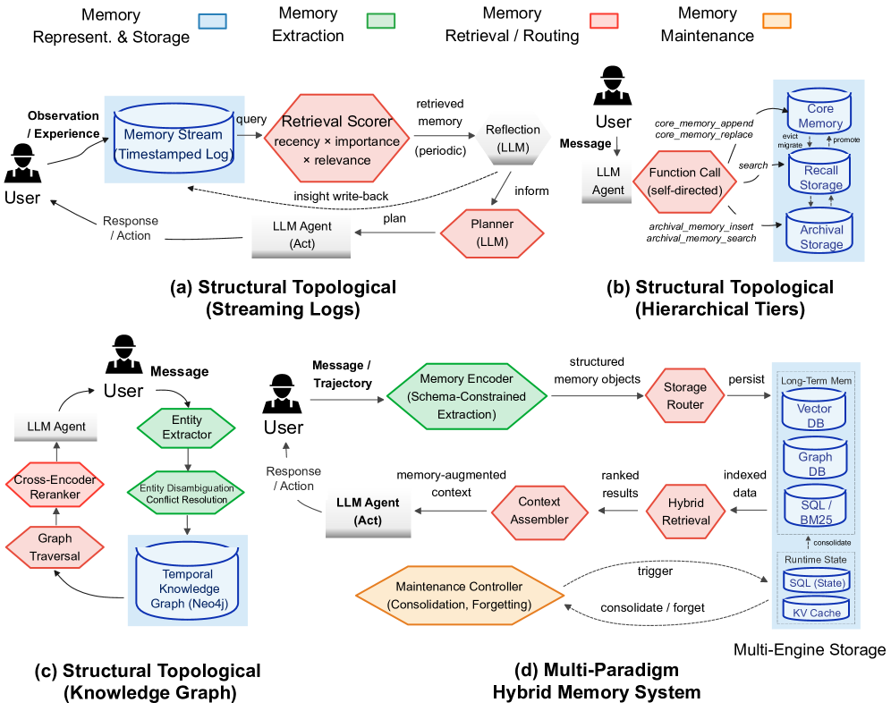
Execution workflows of agent memory (write path, read path, maintenance).에이전트 메모리의 실행 흐름(쓰기 경로, 읽기 경로, 유지관리). · Figure 1, arXiv:2606.24775
Agent memory has grown from a retrieval trick into a stateful system with storage, retrieval, update, consolidation, and lifecycle governance. The paper asks whether the field is ready to treat it that way:
에이전트 메모리는 검색 트릭에서 저장·검색·갱신·통합·라이프사이클 관리를 갖춘 상태 기반 시스템으로 자랐다. 논문은 이 분야가 메모리를 그렇게 다룰 준비가 됐는지 묻는다.
"However, this rapid proliferation has also led to a highly fragmented landscape that lacks systematic evaluation from a data management perspective, raising a natural question: Are we ready for an agent-native memory system?"
— §1, ¶2 · 원문 보기 (§1)
The definition is system-flavored too: memory is a persistent store separate from both the weights and the context window.
정의도 시스템 쪽이다. 메모리는 가중치와도, 컨텍스트 창과도 분리된 지속 저장소다.
"It is the persistent data management system that maintains information beyond a single inference step (e.g., historical interactions, environmental observations, and intermediate tool executions) decoupled from the LLMs' parametric weights and volatile context windows."
— §1, ¶3 · 원문 보기 (§1)
The gap the paper stakes out (§1):
논문이 짚는 기존 평가의 빈자리는 넷이다(§1).
"Last, they treat memory systems as monolithic black boxes rather than decomposing them into fundamental data management modules for isolated, fine-grained analysis."
— §1, ¶4 · 원문 보기 (§1)
"Agent-native" separates the concept from three neighbors:
"에이전트 네이티브"는 이 개념을 세 이웃과 구분하려고 붙인 말이다.
RAG is the one people most often conflate with memory:
이 중 메모리와 가장 많이 혼동되는 것이 RAG다.
"Retrieval-Augmented Generation (RAG) typically operates as a stateless, read-only retrieval primitive: given a query, it fetches relevant passages from a static corpus to augment a single generation step."
— §2 (Distinction from RAG) · 원문 보기 (§2)
The framework is the survey-side contribution: define a memory system as a tuple of four modules, each owning one lifecycle phase, then classify every existing system along those axes. Formally, ℳ_sys = ⟨ℛ, 𝒮, 𝒬, 𝒰⟩.
서베이 쪽 기여가 이 프레임워크다. 메모리 시스템을 네 모듈의 튜플로 정의하고(모듈마다 라이프사이클의 한 단계를 맡는다), 기존 시스템을 모두 이 축으로 분류한다. 형식적으로는 ℳ_sys = ⟨ℛ, 𝒮, 𝒬, 𝒰⟩이다.
The data model and where the bytes physically live.데이터 모델과, 바이트가 물리적으로 놓이는 곳.
Turns the raw interaction stream into memory primitives.원시 상호작용 스트림을 메모리 프리미티브로 바꾼다.
Returns the relevant subset for a query.쿼리에 맞는 부분집합을 돌려준다.
Manages the lifecycle as facts change.사실이 바뀔 때 라이프사이클을 관리한다.
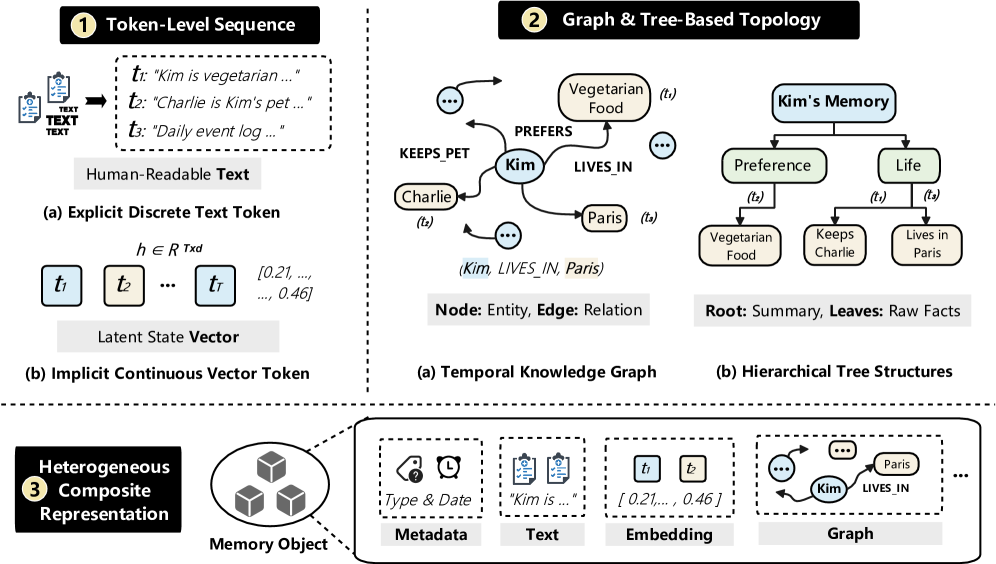
Logical representation methods.논리적 표현 방법. · Figure 2
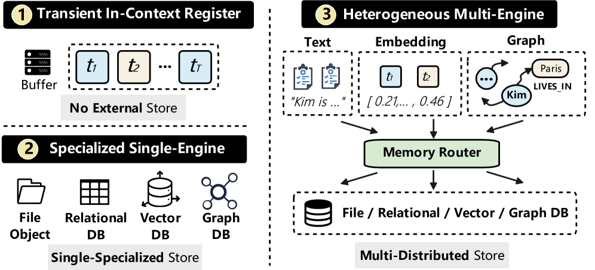
Physical storage & indexing methods.물리적 저장·인덱싱 방법. · Figure 3
Three strategies, in increasing aggressiveness: Raw Sequence Concatenation (keep everything verbatim) → Schema-Free Semantic Extraction (LLM summarizes/extracts facts, no fixed schema) → Schema-Constrained Structured Extraction (typed slots / triplets / JSON). As the results show, aggressive extraction can raise precision but destroys multi-hop reasoning.
공격성 순으로 세 전략이 있다. 원시 시퀀스 연결(전부 원문 그대로 보존) → 스키마 프리 의미 추출(LLM이 고정 스키마 없이 요약·사실 추출) → 스키마 제약 구조화 추출(타입 슬롯/트리플/JSON). 결과에서 보듯 공격적 추출은 양날의 검이다. 정밀도는 올라가도 멀티 홉 추론이 무너진다.
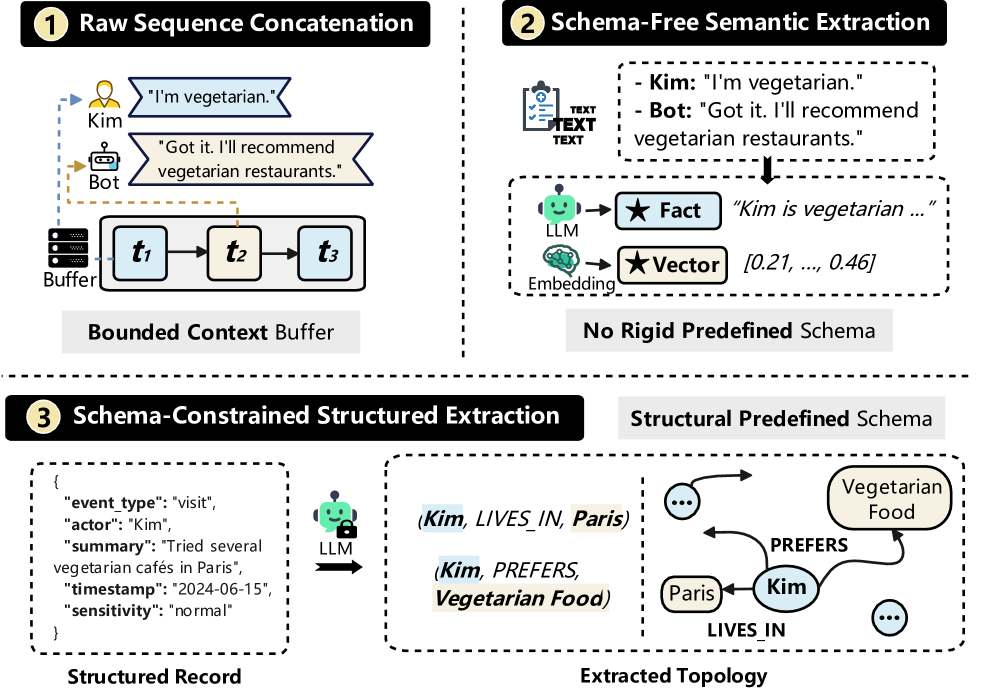
Extraction methods.추출 방법. · Figure 4
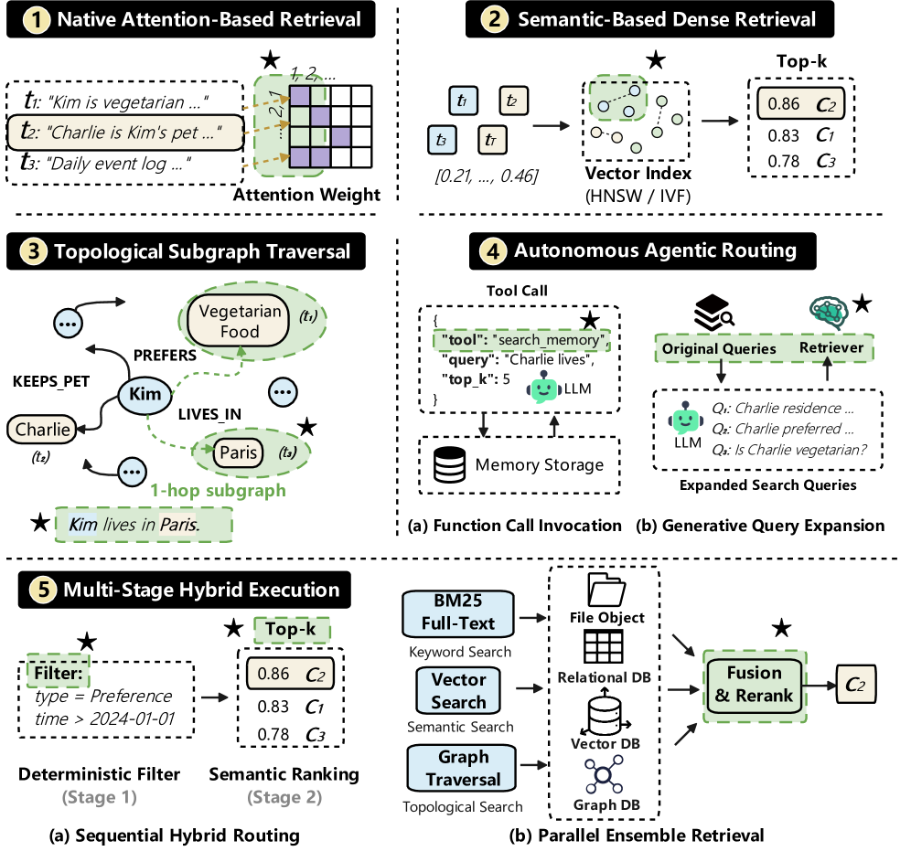
Retrieval & query-routing methods.검색·쿼리 라우팅 방법. · Figure 5
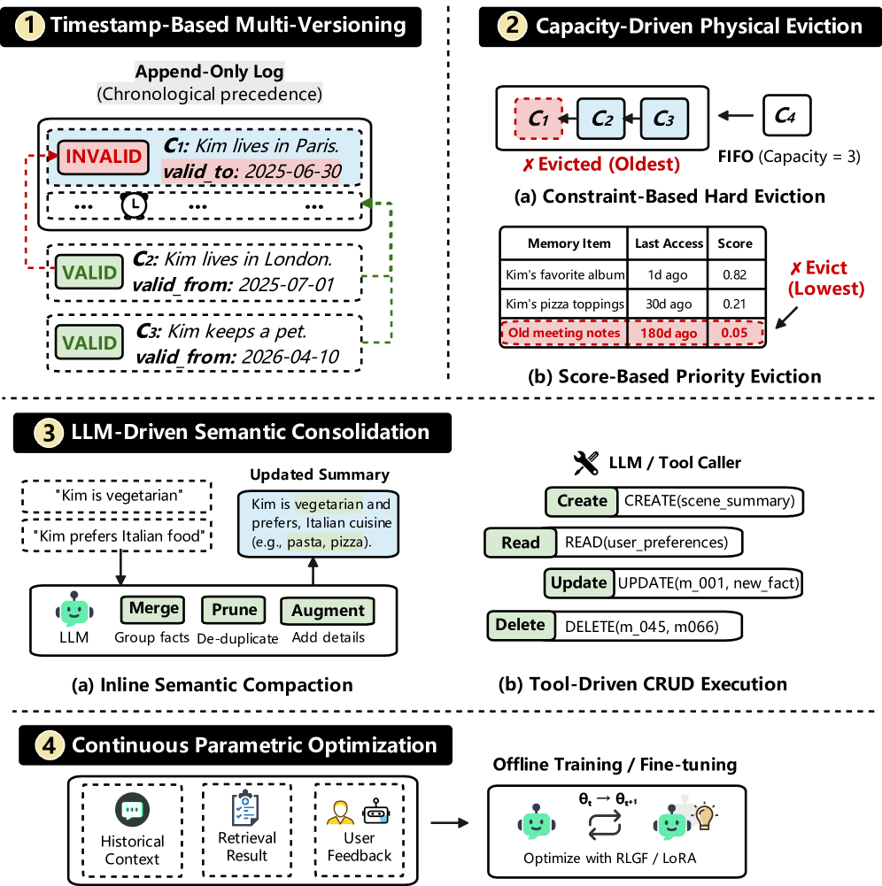
Maintenance methods (𝒰).유지관리 방법 (𝒰). · Figure 6
"Hallucinations of the past" live here: a store with no versioning/eviction keeps serving superseded facts.
"과거의 환각"은 이 모듈에서 생긴다. 버전 관리나 축출이 없는 저장소는 이미 갱신된 사실을 계속 내놓는다.
Every compared system on the four axes (reconstructed from Table 1). The three families (Sequential Context, Structural Topological, Multi-Paradigm Hybrid) fall out of these coordinates.
비교 대상 시스템을 네 축 위에 놓았다(Table 1 재구성). 순차 컨텍스트, 구조 위상, 다중 패러다임 하이브리드의 세 계열이 이 좌표에서 갈린다.
| System시스템 | ℛ Repr / Storage표현/저장 | 𝒮 Extraction추출 | 𝒬 Retrieval검색 | 𝒰 Maintenance유지 |
|---|---|---|---|---|
| MemoChat | Token / In-context | Schema-constr. | Agentic (topic) | LLM consolidation |
| Mem0 | Token / Vector DB | Schema-free | Semantic | LLM (tool-call) |
| MEM1 | Token / In-context | Raw concat | Native attention | Capacity evict |
| MemAgent | Token / In-context | Raw (recursive) | Native attention | Capacity (RL) |
| MemTree | Tree / Vector DB | Schema-free | Semantic | LLM (recursive) |
| Zep | Temporal KG / Graph DB | Schema-constr. (triplets) | Hybrid (Dense+BM25+BFS) | Timestamp versioning |
| Mem0g | Graph / Vector+Graph | Schema-constr. | Topological | Timestamp versioning |
| Cognee | Triplets / Graph+Vec+Rel | Schema-constr. (Pydantic) | Topological (dense-seed) | Timestamp (dedup) |
| LightMem | Composite / Relational | Schema-free (entropy-gated) | Semantic | Timestamp (append log) |
| SimpleMem | Composite / Vec+BM25+SQL | Schema-constr. | Agentic (query expand) | LLM (on-the-fly) |
| MemOS | MemCube / Vector+Graph | Schema-constr. (parser) | Hybrid (Bool+Semantic) | Timestamp (diff writes) |
| MemoryOS | Segment-page / Kw+Vector | Schema-constr. | Hybrid (hierarchical) | Capacity (heat-based) |
| A-MEM | Atomic notes / Vec+Graph | Schema-constr. (JSON) | Topological | LLM (mutate/prune) |
| Letta (MemGPT) | Context tiers / Relational | Schema-constr. | Agentic (func-call) | Capacity (queue flush) |
Reconstructed from Table 1 (the 2 baselines, Long Context and Embedding RAG, are omitted).Table 1 재구성(기준선 2개, Long Context와 Embedding RAG는 생략). · Table 1, arXiv:2606.24775
Sequential: MemoChat, Mem0, MEM1, MemAgent. Structural: MemTree, Zep, Mem0g, Cognee. Hybrid: LightMem, SimpleMem, MemOS, MemoryOS, A-MEM, Letta. Baselines: Long Context, Embedding RAG.순차: MemoChat, Mem0, MEM1, MemAgent. 구조: MemTree, Zep, Mem0g, Cognee. 하이브리드: LightMem, SimpleMem, MemOS, MemoryOS, A-MEM, Letta. 기준선: Long Context, Embedding RAG.
LoCoMo, LongMemEval (via MemoryAgentBench), DB-Bench (from LifelongAgentBench), LongBench. 5 workloads / 11 datasets total.LoCoMo, LongMemEval(MemoryAgentBench 경유), DB-Bench(LifelongAgentBench 출처), LongBench. 총 5 워크로드 / 11 데이터셋이다.
6 memory settings × 4 LLM backbones on LoCoMo, incl. GPT-5.4-mini and GPT-5.4. A GPT-5.4 judge scores LongMemEval accuracy.LoCoMo에서 메모리 설정 6개 × LLM 백본 4개(GPT-5.4-mini·GPT-5.4 포함). LongMemEval 정확도는 GPT-5.4 판정자가 채점한다.
Two layers. End-to-end (§4) probes RQ1 effectiveness, RQ2 retrieval fidelity, RQ3 update robustness, RQ4 long-horizon stability, RQ5 operational cost. Fine-grained ablations (§5) then modify one module at a time (M1 representation/storage, M2 extraction, M3 retrieval/routing, M4 maintenance).
평가는 두 층이다. End-to-end(§4)는 RQ1 효과성, RQ2 검색 충실도, RQ3 업데이트 강건성, RQ4 장기 안정성, RQ5 운영 비용을 본다. 세밀 어블레이션(§5)은 한 번에 한 모듈씩(M1 표현/저장, M2 추출, M3 검색/라우팅, M4 유지) 바꿔 모듈별 효과를 분리한다.
The headline finding. Across LoCoMo, LongMemEval, and DB-Bench, each workload has a different winner:
대표 발견이다. LoCoMo·LongMemEval·DB-Bench에서 워크로드마다 이기는 시스템이 다르다.
With full coverage, MemoryOS and MemOS sit closest to the frontier.
전 범위를 커버하면서 프론티어에 가장 가까운 것은 MemoryOS·MemOS다.
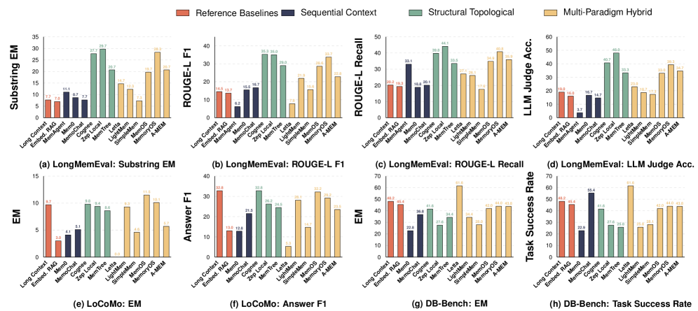
Effectiveness across the three main workloads.세 주요 워크로드의 효과성. · Figure 7, arXiv:2606.24775
"No single memory architecture dominates all scenarios. Composite hybrid systems lead on conversational QA, while graph-based methods excel in single-hop factual recall but struggle with temporal reasoning."
— §1 (Finding ❶) · 원문 보기 (§1)
"No single memory system dominates all workloads, but methods that preserve task-critical evidence through structure-guided filtering remain the most competitive overall."
— §4.1 (O1) · 원문 보기 (§4.1)
With gold evidence annotated on LoCoMo, the best top-1 retriever (SimpleMem, 39.0 Recall@1) is not the best at larger budgets. A-MEM and MemTree lead at Recall@5/@10 and stay flat as the evidence gets temporally distant, where Embedding RAG collapses.
LoCoMo에 정답 증거를 주석해 보면, top-1 최고 검색기(SimpleMem, Recall@1 39.0)가 예산을 늘리면 최고가 아니다. Recall@5/@10에서는 A-MEM·MemTree가 앞서고, 증거가 시간적으로 멀어져도 성능이 평탄하다. 같은 조건에서 Embedding RAG는 무너진다.
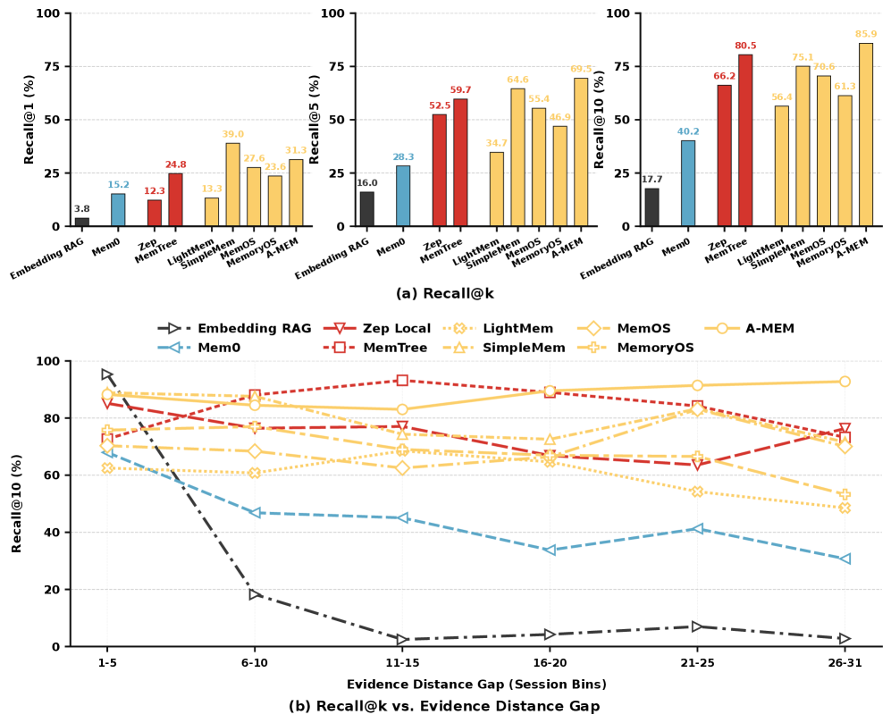
Retrieval over LoCoMo (Recall@K by evidence-distance bin).LoCoMo 검색 결과(증거 거리 구간별 Recall@K). · Figure 8, arXiv:2606.24775
"SimpleMem achieves the highest Recall@1 (39.0), but A-MEM and MemTree become clearly stronger at larger retrieval budgets, reaching 69.5/85.9 and 59.7/80.5 on Recall@5/@10, respectively, while also remaining much more stable as the evidence distance gap increases"
— §4.2 (O1) · 원문 보기 (§4.2)
When facts get revised, the winner depends on the kind of update:
사실이 갱신되는 설정에서는 갱신 종류에 따라 승자가 갈린다.
Cognee, MemOS, MemoryOS sit closest to the frontier.
프론티어에 가장 가까운 것은 Cognee·MemOS·MemoryOS다.
| System시스템 | LoCoMo EM | LoCoMo F1 | KU Substr.EM | KU ROUGE-L | TR Substr.EM | TR ROUGE-L |
|---|---|---|---|---|---|---|
| Long Context | 8.1 | 26.9 | 20.0 | 18.0 | 12.0 | 24.0 |
| Embedding RAG | 1.6 | 7.9 | 20.0 | 17.8 | 10.7 | 22.7 |
| Cognee | 4.0 | 28.1 | 37.8 | 34.0 | 18.7 | 35.8 |
| Zep | 4.8 | 18.1 | 44.4 | 36.8 | 13.3 | 30.5 |
| MemTree | 5.6 | 18.6 | 31.1 | 30.6 | 8.0 | 29.9 |
| MemOS | 8.9 | 28.0 | 28.9 | 30.5 | 12.0 | 31.1 |
| MemoryOS | 3.2 | 22.7 | 35.6 | 32.2 | 16.0 | 31.6 |
| A-MEM | 4.8 | 17.7 | 26.7 | 22.8 | 8.0 | 22.5 |
| Letta (MemGPT) | 0.0 | 7.1 | 17.8 | 5.7 | 12.0 | 8.8 |
Table 2 (excerpt). KU = LongMemEval Knowledge-Update, TR = Temporal-Reasoning, bold = column best.Table 2(발췌). KU = LongMemEval 지식 갱신, TR = 시간 추론, 굵게 = 열 최고. · Table 2, arXiv:2606.24775
"Systems lacking lifecycle management return stale facts, leading to "hallucinations of the past"."
— §1 (Finding ❸) · 원문 보기 (§1)
Backbone sensitivity (Fig 9): swapping the LLM barely reorders the systems. MemOS stays the strongest memory config across all four backbones (Answer F1 32.2 / 41.2 / 38.6 / 41.2). Grounding happens before generation, so a better backbone doesn't rescue a weak memory design.
백본 민감도(Fig 9): LLM을 바꿔도 순위는 거의 그대로다. MemOS가 네 백본 모두에서 가장 강한 메모리 구성이다(Answer F1 32.2 / 41.2 / 38.6 / 41.2). grounding은 생성 이전에 일어나므로, 좋은 백본이 약한 메모리 설계를 구해 주지 못한다.
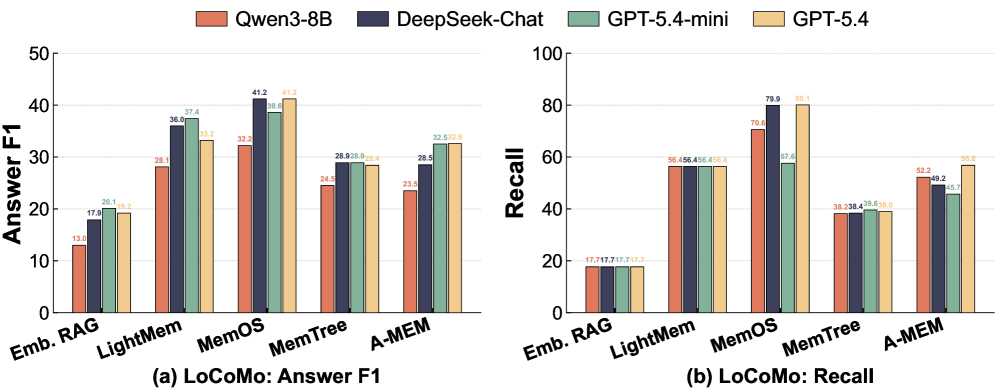
LLM backbone ablation on LoCoMo.LoCoMo에서의 LLM 백본 어블레이션. · Figure 9, arXiv:2606.24775
The most counterintuitive result. As context/history/evidence-gap grows, most memory-backed systems degrade, and for time-dependent queries raw long-context beats them because semantic consolidation shreds the chronological cues those queries need. On LongBench, SimpleMem holds (35.2→34.9 Short→Medium) while Long Context collapses (42.6→19.0); on LoCoMo, Embedding RAG falls 37.1→7.4 Answer F1 as the evidence gap widens.
가장 반직관적인 결과다. 컨텍스트·이력·증거 갭이 커지면 메모리 기반 시스템 대부분이 열화하고, 시간 의존 쿼리에서는 의미 통합이 시간 단서를 지워 순정 롱컨텍스트가 이긴다. LongBench에서 SimpleMem은 35.2→34.9(Short→Medium)로 버티지만 Long Context는 42.6→19.0으로 무너진다. LoCoMo에서는 증거 갭이 벌어지면서 Embedding RAG의 Answer F1이 37.1→7.4로 떨어진다.
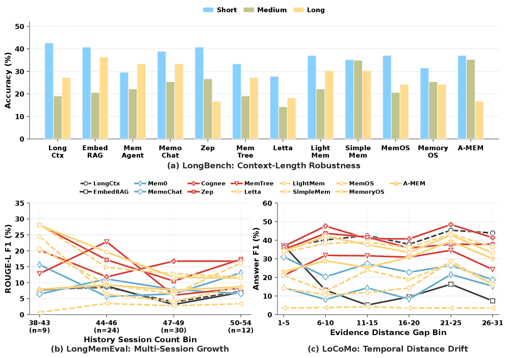
(a) context length (LongBench), (b) session-history growth (LongMemEval), (c) evidence-distance drift (LoCoMo).(a) 컨텍스트 길이(LongBench), (b) 세션 이력 증가(LongMemEval), (c) 증거 거리 드리프트(LoCoMo). · Figure 10, arXiv:2606.24775
"For time-dependent queries, raw long-context retrieval still outperforms most memory-backed approaches, indicating that standard semantic consolidation often destroys crucial chronological cues."
— §1 (Finding ❹) · 원문 보기 (§1)
Plotting utility vs latency exposes the efficiency frontier. Lightweight LightMem (48.3 utility @ 3.67 s) and MemTree (63.5 @ 15.9 s) hold it. High-utility structured systems pay dearly: MemoryOS 82.0 @ 28.6 s, and Cognee/Zep only clear 84 utility after 116.5 s / 155.1 s. On LongBench latency, LightMem is 17.3 s vs Mem0/MemoChat/MemoryOS/A-MEM at 374–552 s. Cost tracks how widely each write propagates, not whether structure is used at all.
유틸리티-레이턴시 그래프에서 효율 프론티어는 경량 LightMem(유틸리티 48.3 @ 3.67 s)과 MemTree(63.5 @ 15.9 s)가 차지한다. 구조화 시스템은 비싸다. MemoryOS는 82.0 @ 28.6 s, Cognee/Zep은 116.5 s / 155.1 s를 들여야 유틸리티 84를 넘는다. LongBench 레이턴시도 LightMem 17.3 s 대 Mem0/MemoChat/MemoryOS/A-MEM 374–552 s다. 비용을 가르는 것은 구조 유무가 아니라 쓰기 하나가 얼마나 넓게 전파되느냐다.
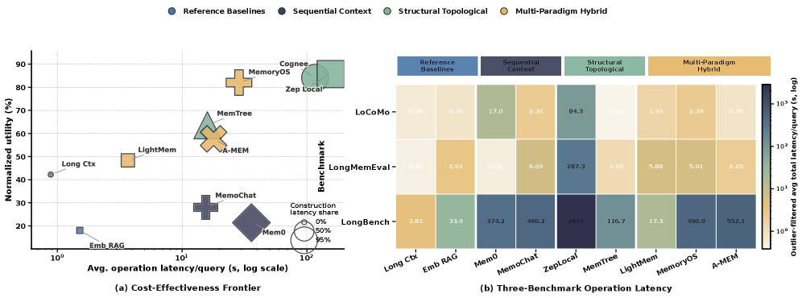
Utility vs latency.유틸리티 vs 레이턴시. · Figure 11, arXiv:2606.24775
"Highly structured systems incur orders-of-magnitude higher index construction time and query latency than lightweight stores, yet do not consistently deliver proportional accuracy gains."
— §1 (Finding ❺) · 원문 보기 (§1)
"The most cost-efficient memory mechanisms are those that localize maintenance to a bounded subset of memory state, whereas mechanisms that repeatedly reorganize a large global state are the least efficient."
— §4.5 (O7) · 원문 보기 (§4.5)
Controlled variants isolate each module's effect. The through-line: keep the raw evidence, filter late, consolidate conservatively.
통제 변형으로 모듈별 효과를 분리한다. 결론은 원시 증거를 간직하고, 늦게 필터링하고, 보수적으로 통합하라는 것이다.
LightMem User-Only Raw is best on all 4 metrics (24.2/38.9 LoCoMo, 26.0/31.4 LongMemEval); Summary collapses (8.5/15.6), and a deeper tree barely beats flat. Recoverable evidence beats abstraction/hierarchy.LightMem User-Only Raw가 4개 지표 모두 최고다(LoCoMo 24.2/38.9, LongMemEval 26.0/31.4). Summary는 8.5/15.6으로 무너지고, 깊은 트리는 flat보다 조금 나을 뿐이다. 복구 가능한 증거가 추상화·계층보다 중요하다.
MemOS Fast Memorize crushes Fine on LoCoMo (25.5 vs 2.5 EM); heuristic topic ≥ LLM topic. Coverage-preserving extraction is stable; aggressive fine extraction wrecks multi-hop reasoning.MemOS Fast Memorize가 LoCoMo에서 Fine을 압도한다(EM 25.5 vs 2.5). 휴리스틱 토픽 ≥ LLM 토픽. 커버리지를 보존하는 추출은 안정적이고, 공격적인 fine 추출은 멀티 홉 추론을 망친다.
A-MEM Hybrid-Balanced is best (24.6 F1); SimpleMem Planning-Only is best (90.6 strict recall), and Planning+Reflect adds overhead with no gain. Plan + balanced fusion help; extra reflection doesn't.A-MEM은 Hybrid-Balanced가 F1 24.6으로, SimpleMem은 Planning-Only가 strict recall 90.6으로 최고다. Planning+Reflect는 오버헤드만 늘린다. 계획과 균형 융합은 도움이 되지만 reflection을 더해도 이득이 없다.
MemoryOS Conservative-Merge is best (23.5/22.8); Delayed-Flush drops to 20.6/19.5; Long Context still has the highest Substr.EM (23.7). Conservative consolidation is the best default.MemoryOS Conservative-Merge가 최고(23.5/22.8)이고 Delayed-Flush는 20.6/19.5로 떨어진다. Substr.EM 최고는 여전히 Long Context(23.7)다. 보수적 통합이 최선의 기본값이다.
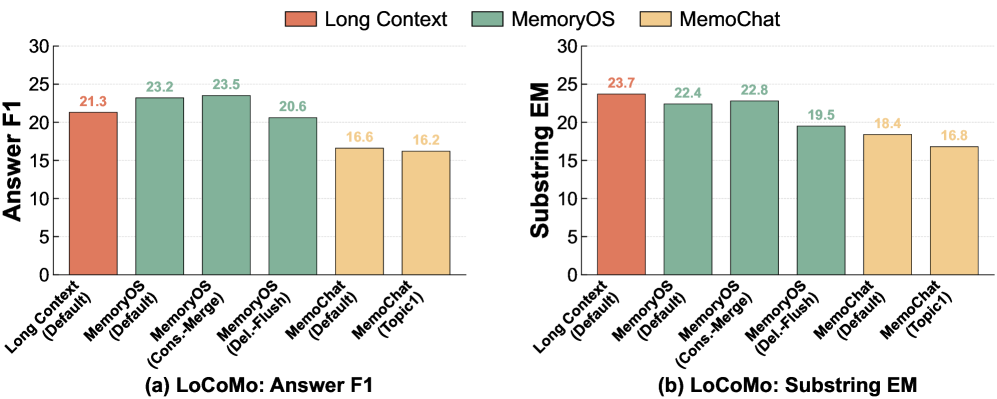
Maintenance ablation.유지관리 어블레이션. · Figure 12, arXiv:2606.24775
"Retaining the original conversational content is more important than increasing abstraction or hierarchy for sustaining both factual recall and reasoning quality."
— §5.1 (O8) · 원문 보기 (§5.1)
The implicit verdict is not yet. The conclusion doesn't declare a winner or ship a finished "agent-native" design; it gives users a way to pick an architecture by their bottleneck, plus an open testbed. The recurring thesis is Workload-Aligned Memory: match the structure to the dominant bottleneck.
암묵적 답은 아직 아니다. 결론은 승자나 완성된 "에이전트 네이티브" 설계 대신, 병목에 맞춰 아키텍처를 고르는 법과 오픈 테스트베드를 내놓는다. 핵심 논지는 구조를 지배적 병목에 맞추는 워크로드 정렬 메모리다.
Concrete design recommendations:
설계 권고는 여섯 가지다.
Open challenges: retrieval that doesn't decay with time, lifecycle management that resolves stale-vs-current, consolidation that preserves order, and structure that avoids global recomputation.
남은 과제는 시간에 감쇠하지 않는 검색, 낡은 사실과 최신 사실을 가리는 라이프사이클 관리, 순서를 지키는 통합, 전역 재계산 없는 구조다.
Unlike many benchmark papers, this one ships two public repos:
많은 벤치마크 논문과 달리 repo 두 개를 실제로 공개했다.
main.py launcher, flattened YAML presets under config/, loaders for MemoryAgentBench / LoCoMo / LongBench / MemBench, method runtimes grouped by the taxonomy. Runnable but early: ~3 commits, Python 3.11 + an OpenAI-compatible endpoint, datasets not bundled (place under datasets/).main.py 런처 하나에 config/ YAML 프리셋, MemoryAgentBench / LoCoMo / LongBench / MemBench 로더, 분류별 method 런타임이 붙어 있다. 아직 초기 단계다(커밋 ~3개, Python 3.11 + OpenAI 호환 엔드포인트 필요, 데이터셋은 datasets/에 직접 배치).